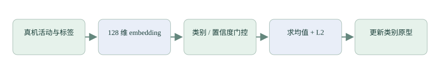

支线四 A：原型网络与真机后训练
用类别中心理解少样本更新，再对照项目的 128 维特征、门控、原型更新和备份恢复。
知识：用特征空间里的类别代表点分类
特征提取器把原始窗口变成向量。为每一类收集带标签的特征，计算中心，预测时比较新特征与各中心的距离或相似度。原始 Prototypical Networks 的训练方法与度量假设应查论文；本项目约定采用归一化原型和余弦相似度进行后续个性化，不把两者的训练细节混成同一件事。
L2 归一化是 v/√Σv²；零向量需要拒绝或单独处理。两个单位向量的点积表示方向相似度，不天然是概率。softmax 后数值也不自动代表已校准置信度。
独立实验：先在二维中手算
Python 可运行小实验 · 需要 NumPy；不访问设备
import numpy as np
def prototype(features):
x = np.asarray(features, dtype=np.float32)
if x.ndim != 2 or len(x) == 0 or not np.isfinite(x).all():
raise ValueError('invalid features')
center = x.mean(axis=0)
norm = np.linalg.norm(center)
if norm < 1e-8:
raise ValueError('degenerate prototype')
return center / norm
a = prototype([[0.9, 0.1], [0.8, 0.2]])
b = prototype([[0.1, 0.9], [0.2, 0.8]])
query = prototype([[0.7, 0.3]])
print(np.stack([a, b]) @ query) # 比较相似度，不当作概率先加入一个错误标签样本，看中心怎样偏移。再用未参与计算的查询样本评估。把训练数据本身再次分类只能说明对这些样本的适配，不能证明泛化更好。
项目约定：后训练统一走 proto

| 当前步骤 | 实现与限制 |
|---|---|
| 采集 | Session 选择目标活动；当前 HAR 类别必须匹配，置信度至少 0.7 |
| 有效样本 | 结束时至少 50 次有效推理，不是 50 个原始 IMU 点 |
| 更新 | 均值与归一化后替换目标类别原型，递增版本 |
| 存储 | 7×128 float 在 RAM，重启需恢复或重新采集 |
| 评估 | 真机默认门限仍需验证，记录门控拒绝比例与误识别 |
现有基础分类器若对某人动作持续误判，门控可能筛掉最需要改进的数据。这需要独立标签记录和评估，不能把“采集了很多帧”直接当作有效训练。当前链路覆盖 HAR 个性化，其他模型尚未提供同样的更新接口。
备份恢复与完整提交
完整原型载荷为 [01][version][7×128×float32]，共 3586 字节，分成 30 片。事务 BEGIN 包含 ID 与 CRC；恢复需确认每一片和最终提交，失败时保留旧模型。App 已有 Pull 入口，完整文件导入/导出界面尚未完成。
具体代码在 proto_session_*、firmware/stm32/AI/proto_model.c 和 app/flutter_app/lib/proto_transfer.dart。序列化与 CRC/ACK 规则见 firmware/stm32/PROTOCOL.md。不要把原型恢复称为完整固件 OTA。
验收与练习
- 使用独立场次比较基础 HAR、旧原型、新原型，记录每类结果和混淆。
- 注入重复、乱序、缺片、错误 CRC、NaN 与断连，旧原型应保留或完整提交。
- 测量采集耗时、有效样本比例、备份耗时和重启后的实际行为。
检查理解
参考与继续阅读
参考用于核对概念和接口；不同系列、库版本与开发板的参数不可直接互换。课程按本仓库现状说明项目，完整资料索引见 来源与版本。